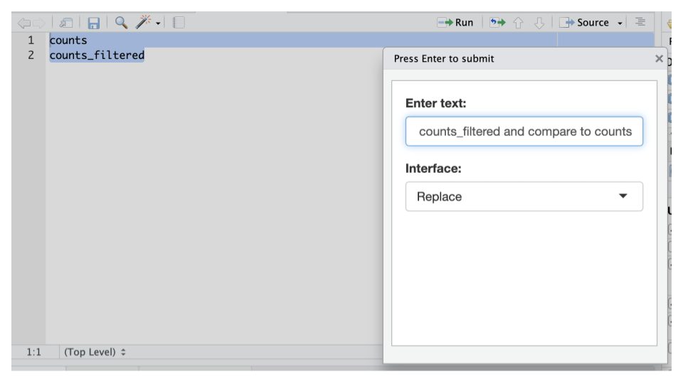
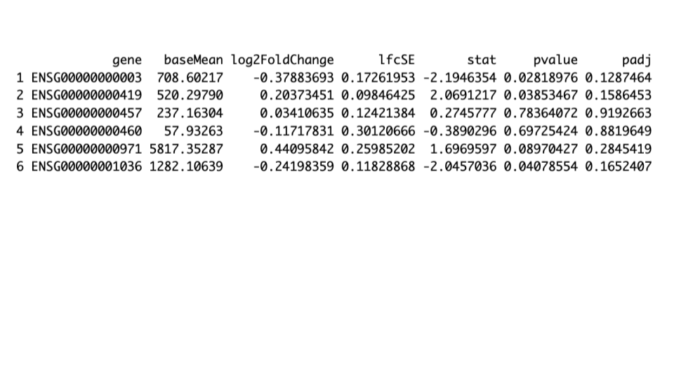
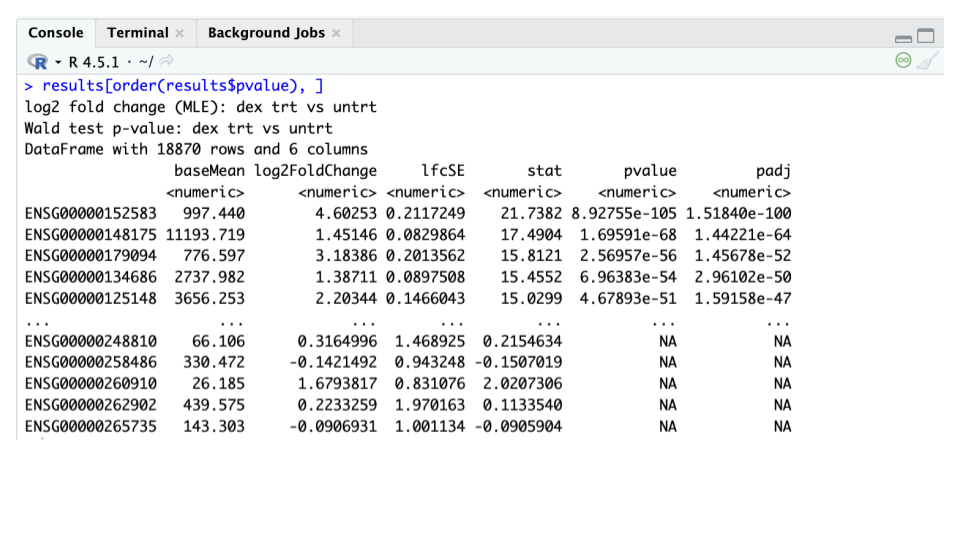
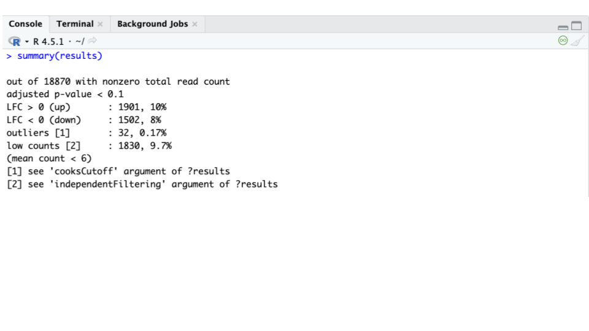
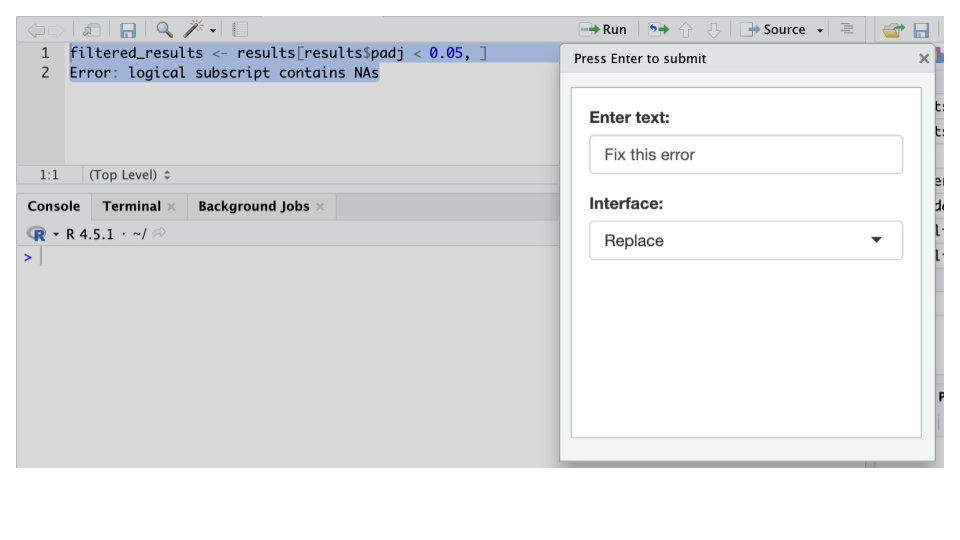
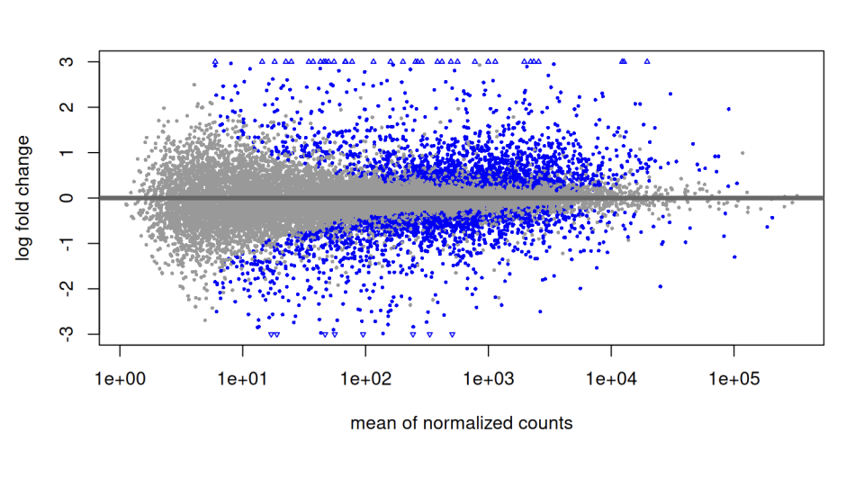
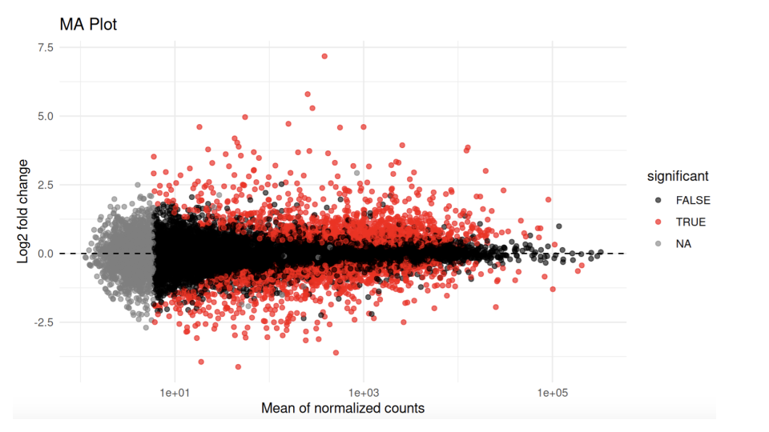
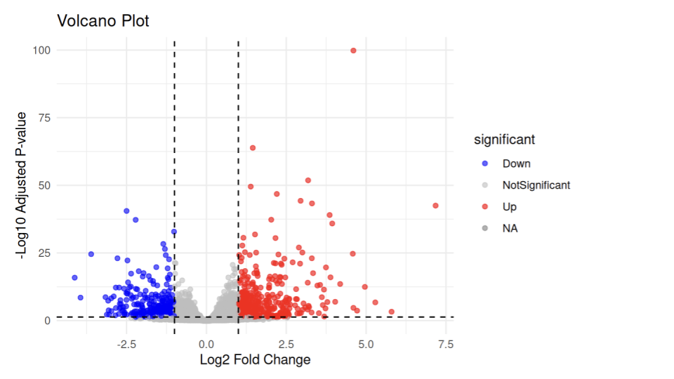

Chapter 4 Run DESeq2
Perform bulk RNA-seq Differential Expression analysis with local AI, gander, and DESeq2
4.1 Learning objectives
- Perform pre-filtering on a raw count matrix to optimize performance and visualization
- Execute a standard differential expression analysis using DESeq2
- Explore and visualize results
4.2 Filter low counts
4.2.2 Filter genes with low counts
Filtering low-count genes before using DESeq2 is optional, but it is a standard practice that helps optimize performance and clean up graphical outputs. For example, eliminating genes with few or no reads reduces the memory size of the data object, speeds up count modeling and improves noisiness in visual representations.
- Retain genes with a total count of at least 1 across all samples.
In a clean R Script:
HIGHLIGHT:
countsPROMPT: Filter genes with ≥ 1 counts in all samples and create a new filtered counts object
sample gander output:
- Check for presence of zero counts
In a clean R Script:
HIGHLIGHT:
counts_filteredPROMPT: Are there any genes with zero counts?
sample gander output:
- Compare counts to filtered counts
HIGHLIGHT: both,
countsandcounts_filteredPROMPT: Summarize counts_filtered and compare to counts

sample gander output:
4.3 Run Differential expression analysis with DEseq2
4.3.1 Run DESeq2 on filtered counts
- In a clean R Script:
HIGHLIGHT: both,
counts_filteredandmetadataPROMPT: Perform differential expression with filtered counts using DESeq2 and
dexas the design condition then save the results as a new object.
We recommend highlighting both objects, the filtered counts, and the metadata, for gander to peek at both to understand the full analysis context. Note that output names like counts_filtered can vary.
sample gander output:
4.3.2 Inspect and Summarize Results
- View results. In a clean R Script:
HIGHLIGHT:
resultsPROMPT: View results table
sample gander output:
Running the code above gives this:

- Order results by p-value.
In a clean R Script:
HIGHLIGHT:
resultsPROMPT: View results table
sample gander output:
Running the code above gives this:

- Summarize results.
In a clean R Script:
HIGHLIGHT:
resultsPROMPT: Summarize results
sample gander output:
Running the code above gives this:

- Count genes passing a significance threshold
In a clean R Script:
HIGHLIGHT:
resultsPROMPT: How many genes have padj < 0.05?
sample gander output:
- View top 10 significant genes
In a clean R Script:
HIGHLIGHT:
resultsPROMPT: View top 10 significant upregulated genes based on padj
sample gander output:
4.3.3 Filter results based on padj value
- Filter to keep only statistically significant results based on a modified adjusted p-value threshold.
In a clean R Script:
HIGHLIGHT:
resultsPROMPT: Filter results based on cutoff padj < 0.05 and save as a new filtered-results object
sample gander output:
ERROR! When running code above, filtered_results <- results[results$padj < 0.05, ], there is an error: Error: logical subscript contains NAs.
- Troubleshoot an error
To troubleshoot error above, highlight both, the code and the error message and feed both to gander:

sample gander output:The code is now fixed and will not produce an error.
4.4 Visualize plots and save results
4.4.1 Visualize an MA plot
- Generate and saves an MA plot to visualize differential gene expression data.
In a clean R Script:
HIGHLIGHT:
resultsPROMPT: Use DESeq2 to create an MA plot. Save the plot.
sample gander output:
library(DESeq2)
plotMA(results, alpha=0.1, ylim=c(-3,3))
dev.copy(png, "ma_plot.png", width=600, height=600)
dev.off()Running the code above gives this:

Or, AI may also choose to build an MA plot using ggplot2:
library(ggplot2)
results_df <- as.data.frame(results)
results_df$significant<-results_df$padj < 0.05
ggplot(results_df, aes(x = baseMean, y = log2FoldChange, color = significant)) +
geom_point(alpha = 0.6) +
scale_x_log10() +
geom_hline(yintercept = 0, linetype = "dashed") +
labs(title = "MA Plot", x = "Mean of normalized counts", y = "Log2 fold change") +
theme_minimal() +
scale_color_manual(values = c("FALSE" = "black", "TRUE" = "red"))Running the code above gives this:

4.4.2 Visualize a volcano plot
- Create a volcano plot to visualize differential gene expression.
In a clean R Script:
HIGHLIGHT:
resultsPROMPT: Create a volcano plot
sample gander output:
library(ggplot2)
results_df <- as.data.frame(results)
results_dfsignificant<-ifelse(results_df$padj < 0.05 & abs(results_df$log2FoldChange) > 1,
ifelse(results_df$log2FoldChange > 1, "Up", "Down"), "NotSignificant")
ggplot(results_df, aes(x = log2FoldChange, y = -log10(padj))) +
geom_point(aes(color = significant), alpha = 0.6) +
scale_color_manual(values = c("Up" = "red", "Down" = "blue", "NotSignificant" = "gray")) +
geom_hline(yintercept = -log10(0.05), linetype = "dashed") +
geom_vline(xintercept = c(-1, 1), linetype = "dashed") +
labs(title = "Volcano Plot", x = "Log2 Fold Change", y = "-Log10 Adjusted P-value") +
theme_minimal()Running the code above gives this:

- Save results as a .csv file
In a clean R Script:
HIGHLIGHT:
resultsPROMPT: Save results as a csv file
sample gander output:
Note: row.names = TRUE is typically preferred for DESeq2 outputs so that gene identifiers are preserved in the first column of the CSV file).